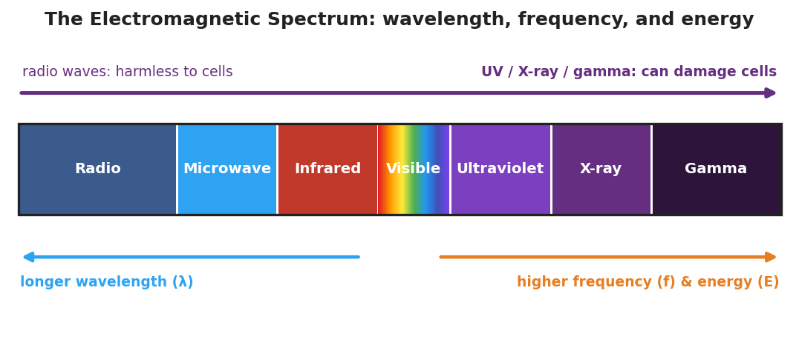
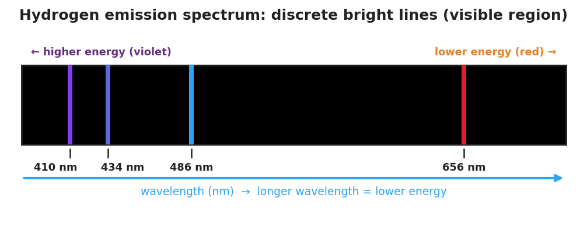

01 Phenomenon
You can stand right next to a radio antenna all day and feel nothing — radio waves are passing through you constantly. But fifteen minutes in strong midday sun gives you a sunburn, and a few seconds of direct gamma radiation would be deadly. All three — radio waves, the ultraviolet (UV) light in sunlight, and gamma rays — are the same kind of thing: electromagnetic radiation, waves of energy traveling at the speed of light. Yet one is harmless and the others are dangerous.
A glowing neon sign or a hydrogen discharge tube gives off light of one specific color. That color is a fingerprint: it tells you which atom is inside and how its electrons are arranged.
02 Driving question
All electromagnetic waves are the same kind of thing — so why is UV light dangerous to your skin while radio waves pass through you harmlessly?
03 Notice & wonder
| I notice… | I wonder… |
|---|---|
Turn & Talk #1: On the spectrum band your teacher is projecting, radio is at the far left and gamma is at the far right. Microwaves cook food; gamma rays are used to kill cancer cells. In one sentence, what does a wave’s position on the band tell you about how much energy it carries — and why that matters for your body?
04 Initial model
Before your teacher names the relationship, use your sorted cards to put the seven EM regions in order from longest wavelength (lowest energy) to shortest wavelength (highest energy). Then label each region’s energy as low, medium, or high, and circle the boundary where waves start to become dangerous to living tissue.
| Order (1 = longest wavelength) | EM region | Energy (low / medium / high) |
|---|---|---|
| 1 | ||
| 2 | ||
| 3 | ||
| 4 | ||
| 5 | ||
| 6 | ||
| 7 |
Where did you draw the “danger line” — between which two regions? _______________________________________________
As wavelength gets shorter, what happens to the energy? _______________________________________________
05 Investigate
Part 1 — ABCs: Sort the spectrum by energy
Before checking anything, arrange the seven EM regions from lowest energy to highest energy using the everyday examples on your cards. Use the clue of how careful you have to be around each one.
| EM region | Everyday example | My energy rank (1 = lowest, 7 = highest) |
|---|---|---|
| Radio | FM radio / Wi-Fi | |
| Microwave | microwave oven / phone signal | |
| Infrared | TV remote / heat from a fire | |
| Visible | the colors your eyes see | |
| Ultraviolet | sunburn / tanning bed | |
| X-ray | dental or bone X-ray | |
| Gamma | cancer radiation therapy |
After you check against the spectrum band, what surprised you about your ordering? _______________________________________________
Part 2 — Read the EM spectrum band
Look at figures/em_spectrum_band.png:

Which region has the longest wavelength? _______________
Which region has the highest energy? _______________
On the band, do wavelength and energy increase in the same direction or opposite directions? _______________
Part 3 — Emission Spectra simulator
Use the Light Emission Spectra simulator (or the discharge tubes and diffraction glasses). For each element, record what you observe.
| Element | Continuous rainbow OR discrete lines? | How many distinct bright lines? |
|---|---|---|
| Hydrogen | ||
| Helium | ||
| Neon | ||
| Mercury |
Now look closely at the hydrogen spectrum and compare to the reference below:

Does hydrogen produce a continuous rainbow or separate lines with black gaps? _______________
Of the four hydrogen lines, which has the shortest wavelength? _______________
Which hydrogen line carries the most energy, and how do you know? _______________________________________________
06 Make it make sense
For each comparison below, decide which wave has the higher energy, and explain your reasoning using wavelength. These use different examples than the Investigation — apply the rule.
Microwaves vs. X-rays. A microwave oven uses microwaves; a dentist’s machine uses X-rays.
- Which has the shorter wavelength? _______________
- Which carries more energy per wave? _______________
- Why does the dentist put a lead apron on you for X-rays but not for microwaves? _______________________________________________
Hydrogen’s red line (656 nm) vs. violet line (410 nm).
- Which has the shorter wavelength? _______________
- Which carries more energy? _______________
- In terms of electrons dropping between energy levels, why is the violet line higher in energy? _______________________________________________
A published claim to evaluate: A website states, “Wi-Fi routers emit radiation, so they must damage the DNA in your cells like the sun’s UV does.” Use the energy relationship to evaluate this claim.
- Wi-Fi uses radio/microwave radiation. Is its wavelength longer or shorter than UV? _______________
- Does it carry more or less energy per wave than UV? _______________
- Is the claim valid? Explain in one sentence. _______________________________________________
07 Key vocabulary
- electromagnetic spectrum
- the full range of electromagnetic waves, ordered by wavelength, frequency, and energy; it runs from low-energy radio waves (long wavelength) through visible light to high-energy gamma rays (short wavelength); all of these waves travel at the speed of light and differ only in their wavelength, frequency, and energy
- wavelength
- the distance from one wave crest to the next; long for low-energy radiation (radio) and short for high-energy radiation (gamma); as wavelength gets shorter, frequency and energy increase (they move in opposite directions to wavelength)
- frequency
- the number of wave cycles that pass a point each second; high frequency means high energy and short wavelength; frequency and energy increase together, while wavelength decreases — this is the relationship that determines whether radiation can damage matter
Use each term in a sentence about today’s investigation. Do not copy the definition — describe something you actually observed or did.
electromagnetic spectrum: _______________________________________________ _______________________________________________
wavelength: _______________________________________________ _______________________________________________
frequency: _______________________________________________ _______________________________________________
08 Revise your model
Return to your Initial Model (the ordered EM regions). Add vocabulary labels:
At the long-wavelength end, write: “long wavelength → low frequency → ___ energy.”
At the short-wavelength end, write: “short wavelength → high frequency → ___ energy.”
Write a revised appositive sentence for the spectrum:
The electromagnetic spectrum — _________________________ — runs from low-energy ___________ waves to high-energy ___________ rays.
Then finish this Because / But / So sentence:
Radio waves pass through your body harmlessly, but ultraviolet light can damage your skin, because __________________________________________, but __________________________________________, so __________________________________________.
09 Exit ticket
(a) Two regions of the EM spectrum: infrared and gamma. Which one carries more energy per wave? Explain your answer using wavelength.
(b) Wave A has a wavelength of 700 nm. Wave B has a wavelength of 200 nm. Which wave has the higher frequency, and which carries more energy? How do you know?
Higher frequency: Wave ___ — Higher energy: Wave How I know: ____________________________________________
(c) In one sentence, explain — in terms of energy — why ultraviolet light can damage your skin but radio waves cannot, even though both are electromagnetic radiation.
10 Explore further
- Light Emission Spectra Simulator (Javalab — "Emission/Atomic Spectra"): Students select different elements (hydrogen, helium, neon, mercury) and observe that each produces its own unique set of discrete bright lines, not a continuous rainbow. They connect the discrete lines back to the energy-level (Bohr) model from earlier in the unit: each line is a specific electron "drop" between levels. Use `figures/hydrogen_emission_lines.png` as the printed reference for the hydrogen case so students can read exact wavelengths. (PhET "Models of the Hydrogen Atom" or a classroom hydrogen/neon discharge tube with handheld diffraction-grating glasses are equivalent live options.)
- EM spectrum sorting activity: Students receive a shuffled set of cards — each naming a region (radio, microwave, infrared, visible, ultraviolet, X-ray, gamma) along with a real-world example (FM radio, microwave oven, TV remote, sunlight color, sunburn, dental X-ray, radiation therapy). Their task is to sort the cards from lowest energy to highest energy and predict which examples are most likely to damage living tissue. They then check their ordering against `figures/em_spectrum_band.png`. This is the core sense-making activity for the wavelength–frequency–energy relationship.